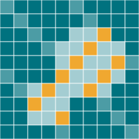

AMCLab
AMCLabResearch
How can we extract reliable structural information when the crystals are small, the sample is beam-sensitive and the instrument shapes the signal?
01 / STRUCTURE & IMAGING
Electron diffraction
Structure from small crystals
Electrons interact strongly with matter, allowing diffraction data to be collected from crystals that are too small for conventional single-crystal X-ray methods. We study how acquisition and analysis can turn these measurements into useful structural information.
Understanding information in 4D-STEM
In four-dimensional scanning transmission electron microscopy (4D-STEM), a diffraction pattern is recorded at each probe position. Our work explores how ptychography and other analysis methods can recover information from these datasets under a limited electron-fluence budget.
A recent numerical study compares ptychographic reconstruction, non-negative matrix factorisation and virtual dark-field imaging for detecting metallic nanoparticles in amorphous ice.
02 / INSTRUMENT & SIMULATION
Electron optics
Models you can experiment with
Understanding the electron beam is essential to understanding the measurement. TEMGYM Basic provides an interactive first-order microscope simulation for learning alignment and beam control. TEMGYM Advanced models trajectories through magnetic and electrostatic lenses and evaluates geometric aberrations.
The detector is part of the experiment
Detector response and counting statistics influence the images we record. InFluence models images captured with direct electron detectors, helping connect an idealised signal to a realistic measurement.
These tools support research into instrument calibration, lens characterisation and low-fluence imaging, as well as practical teaching.

03 / ALGORITHM & MEASUREMENT
Automated image analysis
From images to populations
Measuring many particles consistently is a central challenge in microscopy. We develop workflows for detecting and segmenting nanoparticles, then extracting morphology and size information from the resulting outlines.
Synthetic training images let us explore variations in particle shape, contrast and imaging conditions. TEMPOS brings data generation, model training, image segmentation and export into one workflow.
Useful tools for everyday analysis
SimpliPyTEM simplifies the processing and analysis of TEM images and in situ videos. It includes image enhancement, scale-bar handling, particle measurements and report generation through a Python library and accompanying app.
Working within the dose budget.
Beam sensitivity connects all three themes.
A useful experiment balances the information collected against the changes caused by irradiation. Acquisition strategy, detector efficiency, instrument settings and reconstruction all contribute to that balance. We approach these as parts of the same measurement.
The geometric graphics on this site are conceptual illustrations, rather than experimental datasets.
A few useful terms
TEM: transmission electron microscopy, where electrons pass through a specimen to form images or diffraction patterns.
3D ED: three-dimensional electron diffraction, collecting diffraction patterns over a range of crystal orientations.
4D-STEM: a two-dimensional diffraction pattern collected at each position in a two-dimensional scan.
Ptychography: reconstructing specimen and probe information from overlapping diffraction measurements.
Segmentation: assigning image regions to objects or classes, so their shapes and properties can be measured.